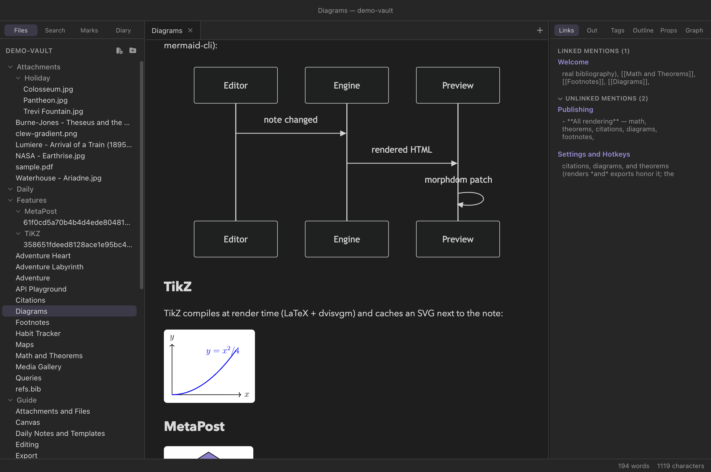
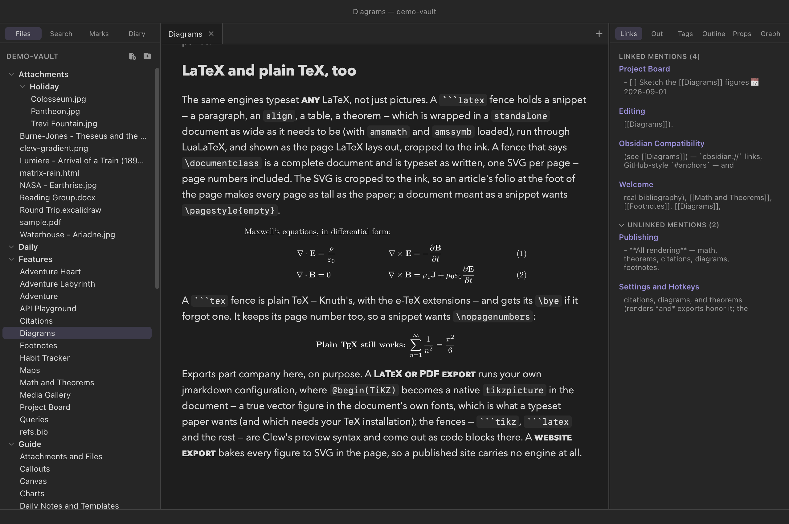
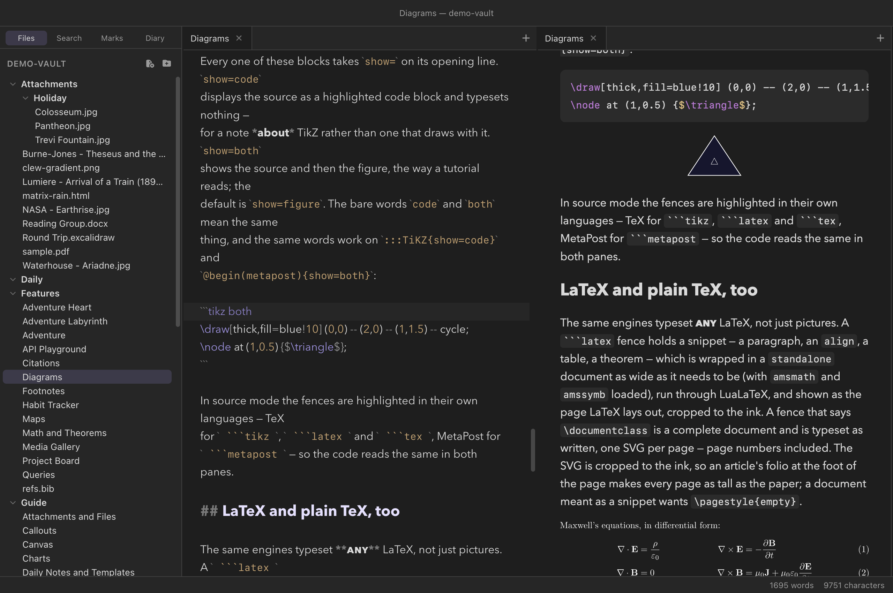
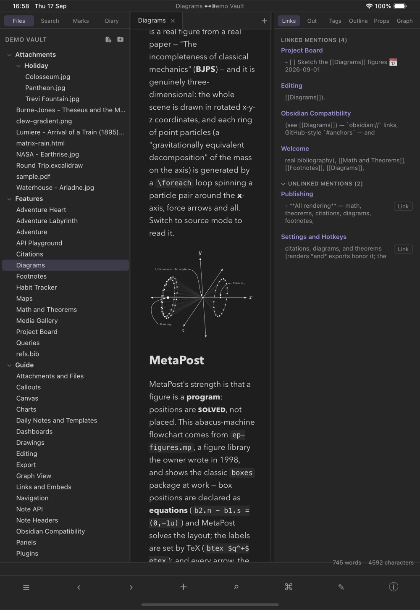

Reading mode
Diagrams
Clew draws diagrams from text in two quite different ways. Mermaid diagrams — flowcharts, sequence diagrams, and the rest of mermaid's catalogue — render instantly in the preview and follow the app's light and dark themes. TikZ and MetaPost figures go further: they are typeset by a real LaTeX — pdfTeX, LuaTeX, MetaPost and dvisvgm, compiled to WebAssembly and shipped with Clew — running in the preview itself. Publication-grade figures, living as plain text in a Markdown file, on any machine: nothing to install, and nothing written into your vault. The same engines typeset whole LaTeX snippets and plain TeX too, and every block can show its source instead of — or beside — its result. Typeset figures sit on the page like ink: black-on-transparent in the light theme, inverted to white-on-transparent in the dark one.
Mermaid
The quickest way to a diagram is the fence Obsidian users already know:
You write
```mermaid
graph LR
A[Welcome] --> B[Clew Design]
A --> C[Dialect Demo]
C --> B
B --> D{{Graph view}}
```Reading mode renders it client-side with a bundled copy of mermaid — no network involved. Anything mermaid can draw is available: flowcharts, sequence diagrams, state and class diagrams, Gantt charts, pie charts, and the rest of its steadily growing catalogue. A sequence diagram, for instance:
You write
```mermaid
sequenceDiagram
Editor->>Engine: note changed
Engine->>Preview: rendered HTML
Preview->>Preview: morphdom patch
```
The ```mermaid fence is not native jmarkdown — it is an
Obsidian-compatibility extension Clew adds to the engine, precisely so
vaults written in Obsidian render their diagrams unchanged. The
engine's own spellings work too, as a container directive or a block
environment:
You write (native forms)
:::mermaid
graph TD
idea --> note --> essay
:::
@begin(mermaid)
graph TD
idea --> note --> essay
@end(mermaid)
In the preview all three spellings look identical. The difference
appears at export time: for LaTeX and PDF
the native forms are drawn as PDF figures by the mermaid CLI
(mmdc), which you install yourself, while the
compatibility fence is the preview's alone, and an export prints it as
code (in LaTeX, with a warning). If you expect a note to become a PDF,
prefer the native forms. When mmdc is not installed, or
fails on a diagram, the export leaves that diagram out, and its
warnings name it by its first line. (In 0.12.0 it is left out without
a word.)
Mermaid diagrams are theme-aware: Clew initializes mermaid with a theme matching the app — its default light theme in light mode, its dark theme in dark mode — and when you switch themes, every diagram on the page is re-rendered from its source so the colors follow. You never end up with a light-background diagram floating on a dark page.


TikZ
TikZ is LaTeX's drawing language — the standard for figures in
mathematical and scientific publishing. A TikZ figure in a note is
written as a block environment holding an ordinary
tikzpicture:
You write
@begin(TiKZ)
\begin{tikzpicture}[scale=1.1]
\draw[thick,->] (0,0) -- (3,0) node[right] {$x$};
\draw[thick,->] (0,0) -- (0,2.2) node[above] {$y$};
\draw[blue,very thick,domain=0:2.8,smooth] plot (\x, {0.25*\x*\x});
\node[blue] at (2.2,1.9) {$y = x^2/4$};
\end{tikzpicture}
@end(TiKZ)
Note the capitalization: the environment is spelled
TiKZ. The container-directive spelling
:::TiKZ … ::: is equivalent. When the note renders, Clew
does what a LaTeX author would do by hand — wraps the picture in a
minimal standalone document, typesets it, and converts
the result to a vector SVG — except that all of it happens in the
preview, in WebAssembly. Nothing is approximated: the engines are
pdfTeX and LuaTeX themselves, the converter is dvisvgm
itself, and the figure in your note is the figure LaTeX draws, TeX
fonts, math labels and all. Shadings and gradients survive as SVG
gradients, patterns as patterns; a figure that asks for a
graph-drawing layout gets LuaTeX, which is fetched only when something
needs it.
One TikZ fact is worth knowing because it looks like a rendering bug:
the classic arrow tips — >=latex,
>=stealth and their primed forms — are not counted in
TikZ's bounding box, so an arrowhead at the edge of a picture sits in
the standalone border, exactly as it does in a PDF. The
default 2pt has room for them at the usual line widths; an
ultra thick line or an enlarged tip may want
border=4pt. The arrows.meta tips
(Latex, Stealth, as in the fence example
below) are counted, and never need the room.
The Obsidian fence
An Obsidian vault written against the TikZJax plugin keeps its figures
in ```tikz fences, and Clew renders those too — including
bodies in that dialect, which carry their own \usepackage
lines and \begin{document} instead of a
\documentclass. A fence body is not given the preloaded
libraries the environments get, so declare what the picture needs, as
a standalone document would:
You write
```tikz libraries="arrows.meta,positioning"
\node[draw,circle,fill=blue!15] (a) at (0,0) {$a$};
\draw[-{Stealth[length=3mm]},thick] (a) -- ++(2.4,0) node[draw,circle] {$b$};
```
The attribute tail after the language is Clew's; TikZJax has no
equivalent, so a fence that must stay readable in Obsidian should put
its \usetikzlibrary lines in the body instead. Unlike the
environments, a bare fence body without a tikzpicture is
wrapped in one for you.
The exceptions are the packages that draw a picture of their own. A
body that begins with \begin{tikzcd},
\begin{circuitikz}, \chemfig or
\schemestart is typeset as it stands, because inside a
second tikzpicture such a drawing collapses to its edge or
vanishes. The package is still yours to name — without
packages= the figure fails in its place with
Environment circuitikz undefined:
You write
```tikz packages="circuitikz"
\begin{circuitikz}
\draw (0,0) to[battery1, l=$V$] (0,2) to[R, l=$R$] (3,2)
to[C, l=$C$] (3,0) -- (0,0);
\end{circuitikz}
```
A generous set of TikZ libraries is preloaded —
positioning, shapes, calc,
fit, matrix, trees,
graphs, arrows.meta, the
decorations families, intersections,
patterns, backgrounds, calligraphy,
and more — so typical figures need no preamble of their own. Every one of
them is in the bundle: a \usetikzlibrary that cannot be found
takes the whole figure down, so the packaging step refuses to ship a build
whose bundles are missing any of them.
MetaPost
MetaPost, the drawing sibling of TeX's METAFONT, is available the same way:
You write
@begin(metapost)
beginfig(1);
path tri; tri := (0,0)--(70,45)--(140,0)--cycle;
fill tri withcolor (0.55,0.5,0.8);
draw tri withpen pencircle scaled 1.2;
endfig;
end.
@end(metapost)
The source is run by MetaPost itself — version 2.11, the same program
as the command line's mpost — straight to SVG. A file
with several beginfig blocks produces several images, one
after another; and a bare body of drawing commands, without the
beginfig/end scaffolding, is wrapped into a
compilable program for you. Labels written as
btex … etex are typeset by real TeX: MetaPost normally
launches TeX as a subprocess for those, which a browser cannot do, so
the labels are collected and typeset in a single batched run instead —
a figure with forty labels costs one, and an unchanged figure none.
Unlike TikZ there is no ::: spelling —
@begin(metapost) is one of the two forms. The other is
Clew's own fence, the counterpart of the TikZ one (Obsidian has no
MetaPost convention to be compatible with):
You write
```metapost
z1 = (0,0); z2 = (60,34); z3 = (120,0);
z4 = 0.5[z1,z3]; % a point solved, not placed
draw z1 .. z2 .. z3 withpen pencircle scaled 1.2;
draw z2 -- z4 dashed evenly;
dotlabel.bot(btex $z_4$ etex, z4);
```LaTeX and plain TeX
The engines are a real LaTeX, so they can typeset more than pictures.
A ```latex fence holds a snippet — a paragraph, an
align, a table, a theorem, anything that goes between
\begin{document} and \end{document} — and
Clew wraps it in a standalone document whose page is as
wide as the content needs (the class's varwidth option,
so a long paragraph wraps at a normal line width and a short formula
gets a page its own size), loads amsmath and
amssymb, typesets it with LuaLaTeX, and shows the result
cropped to the ink. A fence that says \documentclass is a
complete document and is typeset exactly as written, one SVG per page,
the pages stacked — page numbers included, since a document that wants
its pages as pages must get them. That has one consequence worth knowing
before it looks like a bug: each SVG is cropped to the ink, and an
article's folio sits at the foot of the page, so a nine-line document
with the default page style comes out as tall as the paper — the text at
the top, the page number at the bottom, and the note's next paragraph
below all that empty space. A document meant as a snippet wants
\pagestyle{empty} in its preamble (and
\thispagestyle{empty} after \maketitle,
which puts a folio back on the title page).
You write
```latex
The quadratic formula, for reference:
\begin{align}
x &= \frac{-b \pm \sqrt{b^2 - 4ac}}{2a}
\end{align}
```
A ```tex fence is plain TeX — Knuth's, with the e-TeX
extensions — and gets its \bye if it forgot one. Like a
LaTeX document it keeps its page number, which plain TeX sets at the
foot of the page: a one-line snippet without \nopagenumbers
comes out as tall as its page. A
```tex body that turns out to say
\documentclass is treated as the LaTeX it is rather than
failing on an undefined command. The packages=,
preamble= and border= attributes below apply
to a wrapped ```latex snippet the way they apply to a
TikZ body; on a complete document they mean nothing and are ignored.
You write
```tex
\nopagenumbers
\centerline{\bf Plain \TeX, $\sqrt{2}$ and all.}
```

align of
Maxwell's equations from a ```latex fence, typeset by
LuaLaTeX in the page, and a line of plain TeX from a
```tex fence under it.
LuaTeX is the engine for both fences — LuaLaTeX for
```latex, plain LuaTeX for ```tex — which
means the first such snippet on a machine fetches LuaTeX (about
12 MB, once) and costs a little more per run than pdfTeX: a short
snippet is a quarter of a second against pdfTeX's eighth.
engine=latex on a ```latex fence asks for
pdfTeX instead, and engine=plain on a ```tex
fence for the e-TeX format.
PostScript: PSTricks, EPS and turned boxes
Some of what LaTeX draws is PostScript, which dvisvgm cannot turn into
SVG on its own: a PSTricks picture, an EPS image, a box that
graphicx's \rotatebox turns or \scalebox
scales, a raw \special{ps: …}. Clew passes such a figure
through Ghostscript, compiled to WebAssembly and shipped with the
engines, so all of these are drawn — PSTricks with its family of
packages, pst-plot, pst-node,
pst-circ, pst-solides3d and the rest. (In
0.12.0 PSTricks is “not found”, an EPS image is left out without a
word, and turned or scaled text is drawn level and at its own size.)
You write
```latex
\documentclass[border=2pt]{standalone}
\usepackage{pst-plot}
\begin{document}
\begin{pspicture}(0,-1.2)(6.3,1.2)
\psaxes{->}(0,0)(0,-1.2)(6.3,1.2)
\psplot[linecolor=red]{0}{6.28}{x 57.2958 mul sin}
\end{pspicture}
\end{document}
```Ghostscript is big — 12.5 MB — so it starts only for a figure that needs it, one whose typeset output carries PostScript. A note whose figures carry none never loads it.
A figure cannot reach files in the vault, so an EPS image kept beside
the note is “not found”. Put the image in the document instead: a
filecontents* environment writes it under a name, and
\includegraphics takes it from there.
You write
```latex
\documentclass[border=2pt]{standalone}
\begin{filecontents*}[overwrite]{box.eps}
%!PS-Adobe-3.0 EPSF-3.0
%%BoundingBox: 0 0 72 36
0 0.6 0 setrgbcolor
0 0 72 36 rectfill
showpage
\end{filecontents*}
\usepackage{graphicx}
\begin{document}
\includegraphics{box.eps}
\end{document}
```In the note's own typeface
A figure's text is Latin Modern, TeX's own face, and for a diagram that
is usually right. When it is not — a labelled picture that should read
as part of the prose around it, a paragraph typeset for its layout
rather than for TeX's look — font=note on the opening
line sets the figure in the face the note itself is read in:
You write
```tikz font=note
\node[draw,rounded corners] (a) at (0,0) {a labelled node};
\node[draw,rounded corners] (b) at (4,0) {in the note's face};
\draw[->,thick] (a) -- node[above] {\textit{as the prose}} (b);
```
```latex font=note
A paragraph in the note's face: regular, \textbf{bold}, \textit{italic}
--- with maths, $e^{i\pi} + 1 = 0$, still in Latin Modern.
```
Three things happen behind that word. The figure moves to LuaTeX, the
one engine here that loads OpenType fonts, and its preamble gains a
fontspec block naming the face's files. The face is the
one your platform gave the app — Avenir Next on a Mac, Segoe UI on
Windows, Cantarell where GNOME has its static build installed — read
from the system's own font folder when Clew starts, one file per style
(regular, bold, italic, bold italic), never shipped, and handed to the
engine as bytes. And the SVG comes out as text: rather than
tracing each glyph as an outline, dvisvgm embeds a subset of the same
font file and emits real text runs, so the figure is drawn by the
browser's own text renderer in the same face as the paragraph above
it — selectable, and crisp at any size. Mathematics stays in Latin
Modern, as it should; font=note is about the words.
It works on ```tikz, on ```latex, on
:::TiKZ and the @begin(TiKZ) environment, on a
complete document (the block goes in after its
\documentclass), and on ```tex. Plain TeX has
no fontspec, so there the face is loaded the plain way — luaotfload's
own \font lines — and put where plain TeX keeps its
fonts: {\bf …} and {\it …} switch to the bold
and italic faces, -- and --- still make their
dashes, and mathematics stays in Computer Modern. MetaPost figures
ignore it — their labels are set by the TeX named in tex=.
font=note
figure while you are editing it re-renders once, from the top, to
pick the bundle up — you will see the page redraw.
font=note works the same on the iPad, in Avenir Next —
the face the iPad reads notes in too — with one difference in how the
face is found: the app never reads Apple's font file, it asks the
system for each style's tables and writes the four files itself, once,
the first time a figure asks. The fontspec bundle is part of the app
rather than fetched, so the first such figure costs only the second or
so of reading the font. What the iPad build carries is decided when it
is made: a build without that bundle refuses font=note
figures by name in their own place and typesets everything else.
A complete document that loads fontspec itself is
recognised too and gets the same bundle and the same font files. Name
the face by its family — \setmainfont{Avenir Next} on a
Mac — or by its files, as Clew does: NoteFont-Regular.ttf,
NoteFont-Bold.ttf, NoteFont-Italic.ttf and
NoteFont-BoldItalic.ttf, with Path=./. Add
fonts=woff2 on the fence for text rather than outlines.
Other families can be named too, from the fonts on this machine
(below). (In 0.12.0 only those four files
are there to find, and only by file name: a family name fails, the
note's own included.) To have a font=note figure drawn as
outlines after all, add fonts=paths beside it.
Any font on this machine, by name
A document that loads fontspec can name any font family
installed on this machine, as it would under a desktop TeX
installation:
You write
```latex
\documentclass[border=2pt]{standalone}
\usepackage{fontspec}
\setmainfont{Optima}
\newfontfamily\head{Gill Sans}
\begin{document}
{\head In Gill Sans,} then Optima, \textbf{bold} and \textit{italic}.
\end{document}
```
Clew reads the families a figure asks for — the names in
\setmainfont, \setsansfont,
\setmonofont, \setmathfont,
\fontspec, \newfontfamily,
\newfontface and \setfontfamily — finds each
among the fonts in the system's font folders and your own, and hands
the engine that family's files: every style it has, so
\textbf and \textit find theirs. A name
ending in .ttf, .otf, .ttc or
.otc is a file, never looked up as a family; a family is
named in full, as the system's font list gives it, in any case —
Hoefler Text, not Hoefler. Mathematics
works the same way: unicode-math's default font does not
load, but \setmathfont{STIX Two Math}, or any OpenType
maths font you have, does. (Not in 0.12.0, where a family name fails,
whatever the family.)
The text comes out as outlines, as any fontspec document's does,
unless the fence says fonts=woff2. A figure naming a
family the preview has not been given yet — one you have just
written — reloads the preview once, from the top, to hand it over, as
a first font=note figure does. Clew lists the installed
families once a launch, the first time a figure names one, so a font
installed while Clew is running is found after a restart.
unicode-math, among others. That is not the Mac's set,
so a family one has and the other lacks fails on the other with
fontspec's error naming it. A font iPadOS downloads only when asked
is not found, and a few of its faces, Iowan Old Style among them,
cannot be named.
Fragments: preamble text by name
A note's figures usually want the same preamble — the macros you write maths with, a colour or two, a package the pictures share. Rather than copy that block into every fence, write it once in Settings → TeX fragments, give it a name, and ask for it by name on a figure's opening line:
You write
```latex clew-fragments='math macros'
$\R \subseteq \C$ for every $\R$ in sight.
```
```tikz clew-fragments='math macros, colours'
\fill[accent] (0,0) circle (0.4) node[right=6pt] {$\R$};
```
Names are separated by commas and inserted in the order you write them,
so a fragment may build on one listed before it. A name is matched
loosely — Math Macros and math macros are the
same fragment — because you type it in two places and neither should
have to be exact about capitals or spaces.
The text always lands in the figure's preamble, though where
that is depends on the block: for a snippet, after the
\documentclass Clew wraps it in and after the packages Clew
adds; for a complete document, one that carries its own
\documentclass, straight after that line; for a plain
```tex block, which has no preamble at all, at the top of
the source. A preamble= written on the block itself still
comes last of all, so a figure can always override a fragment it named,
and so can anything the fragment itself defines twice — TeX's own rule,
that the last definition wins, is the one to think with here.
A fragment can carry the packages it needs, and often has to: Clew wraps
a ```latex snippet in a standalone document with
amsmath and amssymb already loaded, but a
```tikz picture is wrapped by the figure library instead and
gets neither. A fragment shared by both wants its own
\usepackage line — otherwise a macro that expands to
\mathbb{R} works in the snippet and is an undefined control
sequence in the picture, which is a puzzling way to meet the difference.
Two places to keep them
The settings section has two lists, and the difference between them is what happens when the vault goes somewhere else:
| List | Kept in | Reaches |
|---|---|---|
| Global | Clew's own settings, on this machine | Every vault you open here — your own macros, always to hand |
| This vault | The vault's .clew/ folder | This vault only — and it travels with it, so a figure renders the same on your other machine or for whoever you share the vault with |
A vault fragment shadows a global one of the same name. That is the arrangement plugins use, for the same reason: the vault is the more specific place, and a vault that carries its own macros should render by them wherever it is opened. The row says so in the settings section when it happens, so a name you forgot you had used twice is not a mystery.
Editing a fragment re-typesets every figure that uses it, in every note open at the time — the figures that do not use it are not touched, because a figure is identified by the text it was given rather than by the name it asked by. Renaming one therefore typesets nothing at all; what it does do is leave any figure still asking for the old name saying so, in place of itself, until you write the new name there.
```metapost block is refused the same way and
for a plainer reason: MetaPost has no preamble, and the TeX a
MetaPost file needs goes in its own verbatimtex … etex
block.
Fragments are part of how Clew displays a figure, like
show= and the typesetting itself: a
LaTeX or PDF export runs your own TeX with
your own configuration and knows nothing about them, so a note meant
for that route wants its preamble written where TeX will find it. A
website export does use them —
the pages it bakes are the pages you were reading.
Showing the source instead
Every block on this page — the four fences, :::TiKZ, and
the two environments — takes show= on its opening line:
| Opening line | Renders |
|---|---|
```tikz (the default, show=figure) | The typeset figure |
```tikz show=code | The source as a highlighted code block; nothing is typeset |
```tikz show=both | The code block, then the figure — source above result, the way a tutorial reads |
The bare words code, both and
figure mean the same as their show= forms,
so ```latex code reads naturally on a line about LaTeX
code. On the environments and the directive the attribute goes in the
usual braces: @begin(metapost){show=both},
:::TiKZ{show=code}. A code block shown this way is an
ordinary fenced code block to the rest of Clew — highlighted by
highlight.js in the reading pane, with its line stamped for scroll
sync — and MetaPost, which highlight.js does not know, is given a
grammar of Clew's own so it does not come out as plain text.
In the source pane the same fences are highlighted with their own
grammars — TeX for ```tikz, ```latex and
```tex, MetaPost for ```metapost — so a
figure's code reads the same on both sides of a split; see
Dialect-aware highlighting.


```tikz both
fence in source mode, tokenized as TeX, and the same block in reading
mode — its code, then the figure it draws.Typesetting and caching
Typesetting on every keystroke would be wasteful, so a rendered figure is cached by its content. The source and its attributes are hashed, and the resulting SVG is kept in the preview's own store, keyed by that hash. Edit the prose around a figure and the picture is not touched at all; edit the figure and only that one is typeset again. Close the app, reopen it a week later, and the figures come back from the cache without an engine starting.
Nothing goes into your vault. Earlier versions of Clew shelled out to
your TeX installation and cached the SVG in TiKZ/ and
MetaPost/ folders beside the note; neither the preview nor
an export writes or reads those now. If a vault of
yours has them, they are ordinary folders of SVG files, yours to keep or
delete, and Clew does not touch them — though a jmarkdown run of your
own on the command line still uses them. (In 0.12.0 a single-note
export uses them too.)
Attributes tune both the figure and its embedding, written in the environment's attribute block or after the fence's language. The first two are the presentation; the rest are handed to the engine:
| Attribute | Effect |
|---|---|
scale=1.5 | Scale the rendered figure (a CSS transform) |
width=45% | Make the figure that wide instead, scaling it to fit |
libraries="calc,fit" | TikZ: \usetikzlibrary for these |
packages="booktabs" | TikZ and LaTeX snippets: \usepackage for these |
preamble="…" | TikZ and LaTeX snippets: extra preamble lines, verbatim (options and all) |
border=4pt | TikZ and LaTeX snippets: the standalone border (default 2pt) — the white space around the picture, which the SVG keeps for a picture and crops for a snippet |
font=note | TikZ and LaTeX: set the figure's text in the note's own typeface — LuaTeX, fontspec, real text in an embedded subset (above) |
fonts="paths" | TikZ and LaTeX: paths (the default: glyph outlines) or woff2 (text in an embedded font subset — what font=note chooses) |
gdlibraries="layered" | TikZ: \usegdlibrary — graph drawing, which selects LuaTeX |
engine="lualatex" | TikZ and LaTeX: force the engine (latex, lualatex, plain, luatex; TikZ defaults to auto, ```latex to lualatex, ```tex to luatex) |
tex="latex" | MetaPost: which TeX sets btex … etex labels (latex, plain, none) |
prologues=3 | MetaPost: the prologues value (default 3) |
alt="…" | An accessible label for the figure |
show-console | Keep the engine's log visible under the figure |
cache="off" | Typeset this figure every time, cache nothing |
clew-fragments="math macros, colours" | TikZ, LaTeX and plain TeX: insert these named fragments' preamble text, written in Settings → TeX fragments (above) |
show=code show=both | Show the source instead of the figure, or before it (above) |
You write
@begin(TiKZ){scale=1.5}
…
@end(TiKZ)
```tikz libraries="arrows.meta" border=4pt
…
```
The old embed and empty-cache attributes no
longer mean anything — the SVG is always inline, and a cache keyed by
content is never stale — so they are accepted and ignored rather than
reported as errors in a note you wrote years ago.
What is in the box, and what is not
The engines ship with Clew: MetaPost 2.11, pdfTeX, LuaTeX and
dvisvgm, all from TeX Live 2025, and Ghostscript 10.08.0 for
the PostScript in a figure, all compiled to
WebAssembly, together with the fonts and macro packages they read —
Computer Modern, Latin Modern, the 35 PostScript fonts, PGF/TikZ with
every library it ships, pgfplots, tikz-cd, circuitikz, chemfig,
tikz-3dplot, PSTricks, amsmath, xcolor, standalone, and
more. (Ghostscript and PSTricks are not in 0.12.0.) There is nothing
to install and nothing on your PATH to find, on any of
the three platforms; a figure renders the same on a machine that has
never seen TeX. Two pieces are loaded only when they are wanted:
LuaTeX, when a figure asks for graph drawing or
\directlua, or a note holds a ```latex or
```tex fence; and Ghostscript, when a figure's typeset
output carries PostScript.


What that leaves out is worth knowing, because it is the difference between this and a full local installation:
- Fonts: the bundled ones, the note's, and this machine's
by name. Text in figures is set in the Type 1 faces
above; a figure can ask for the note's own face with
font=note, or loadfontspecand name any family installed here. What it cannot have is a font this machine lacks.unicode-math's default maths font does not load; name an installed one with\setmathfont. (In 0.12.0 a figure cannot name a family at all: only the note's face is handed over, as files.) - The bundled packages, not all of CTAN. A figure needing something outside the bundle fails with TeX's own "file not found" in its error box rather than silently dropping it.
- No
\write18, no PDF output. A figure is typeset and converted to SVG; nothing shells out. Ghostscript, which draws a figure's PostScript, is WebAssembly like the engines.
When a figure fails for the ordinary reason — a typo in the picture —
its place in the note is taken by an error box: the first error and the
text TeX had read up to it, with the full log folded under Show
log — in reading mode, live edit and the
live preview alike, where
Show log opens the log without the cursor leaving the figure.
While you edit, the line with the error is marked in the editor; hover
it for the message. (In 0.12.0 the box shows the whole log at once.) Add
show-console to keep the log visible even when the figure
succeeds.
Diagrams in export and publishing
In LaTeX and PDF export, TikZ figures are
not embedded as images at all — the tikzpicture source
passes through natively, so the print figure is drawn by the same
engine as the rest of the document, in the document's own fonts —
your TeX installation, when the document is compiled. An export runs
jmarkdown itself, with your own configuration, which is why the
fences — ```tikz,
```metapost, ```latex and
```tex, which jmarkdown itself does not know — export to
LaTeX as code blocks. (show= is likewise the preview's:
an export of a @begin(TiKZ){show=code} block still draws
the picture.)
A @begin(metapost) figure, and a Mermaid diagram in one of
its native forms, go into LaTeX as PDF figures no wider than the line:
the export makes each one once (MetaPost with the TeX that draws the
export's figures, below; Mermaid through
mmdc) and keeps it in
a cache of Clew's own, outside the vault. The figures a file uses are
copied into a folder beside it, named after it —
Report.tex gets Report-figures/ — and the
.tex includes them from there by a path relative to
itself, never by its full path on your disk; an HTML export does the
same with its SVG figures. So a kept .tex or
.html stands on its own, as long as its folder goes with
it; Exporting notes says what
Clew does with the folder. (In 0.12.0 the figures are kept in
MetaPost/ and mermaid/ folders beside the
note, the path is the full one, and TeX meets an error at every such
figure; see Exporting notes.)
Who draws an export's figures
Where an export draws a TikZ or MetaPost figure as a picture — both
kinds in an HTML export, MetaPost in a LaTeX export and so in a PDF via
LaTeX — Clew's built-in TeX draws it by default: the
same engines the preview uses, so it needs no TeX installation.
A font family a figure names, \setmainfont{Georgia} say, is
handed to it from this computer's fonts with every face — bold and
italic included — the way the preview gets it, and in a restricted vault
too, since it is only fonts. What the built-in TeX cannot draw goes to
your TeX installation instead: a figure naming a family this computer
does not have, or one over 64 MB, which is not handed over; or one
needing a file the built-in TeX's bundles leave out — a package such as
siunitx, or a file the figure \inputs. The export's
warnings say which figure went
and what came of it: drawn by your installation, or, with no TeX
installed, not drawn, with an error box in its place. They call the
built-in TeX by its library's name, mp-tikz-wasm.
To have your installation draw every figure, choose Settings →
Appearance → TikZ and MetaPost figures in exports →
Your TeX installation (the default is Clew's built-in
TeX). That runs your lualatex, dvisvgm,
mpost and mptopdf; without them each figure is
an error box. The setting is for a vault you have
trusted; a restricted vault's HTML
and LaTeX exports always use the built-in TeX (below). (In 0.12.0 there is no
setting: your installation draws every export's figures, a restricted
vault's too.)
One difference shows. A MetaPost figure with no size of its own comes
out ¾ as large in an HTML export as your installation drew it: the
built-in TeX measures it in pixels, as the preview does, where your
installation's SVG was in points, so it now matches the note. A figure
given a size, @begin(metapost){width='45%'} say, is
unchanged. (In 0.12.0 such a figure is a third larger in an HTML export
than in the note.)
A restricted vault's HTML and LaTeX exports never send a figure to your
installation, whatever the setting: the built-in TeX reads nothing on
your disk but the fonts Clew hands it, and your installation's TeX can
read anything you can. A figure the built-in TeX cannot draw shows
TeX's own error box — a package the vault's own .jmarkdown/ folder would
have loaded is missing, for one, since a restricted export does not read
it. If the built-in TeX cannot run at all, each figure is
[TiKZ figure not drawn] or [MetaPost figure not drawn]
in a quiet dashed box, left out of a LaTeX export, and the warnings say
why. A PDF via LaTeX would run your installation over the whole
document, the vault's own TeX and its TikZ pictures included, so a
restricted vault makes none, a note's or a book's: it says so by name
and offers the reading-view PDF, which needs no TeX, or trusting the
vault (Trusting a
vault). (In 0.12.0 a restricted vault's PDF via LaTeX is compiled
like any other.)
The reading-view PDF waits for every figure and prints what the screen shows. When a whole vault is published as a website, each figure is typeset once during the export and the SVG is written into the page, so the published site carries no engine at all — a visitor loads a few kilobytes of vector graphics instead of a hundred megabytes or so of TeX, and needs no TeX on the server either.
```mermaid renders in Obsidian
itself — that is why Clew supports it — and ```tikz
renders there with the TikZJax plugin installed, which is the shape
Clew's fence follows. Clew typesets those bodies with a real LaTeX
rather than TikZJax's frozen memory image, so pictures that need a
library or a package work here and may not there; the fence's
attribute tail is Clew's own and Obsidian ignores it. The rest of
this chapter is Clew-only: :::mermaid,
@begin(mermaid), @begin(TiKZ),
:::TiKZ and @begin(metapost) appear in
Obsidian as the literal block text, and ```metapost,
```latex and ```tex as ordinary code
blocks — as does a ```tikz show=code fence, since
TikZJax knows nothing of the attribute tail and renders it anyway.
Reference
| Diagram | Syntax | Rendered by | Needs |
|---|---|---|---|
| Mermaid (Obsidian-compatible) | ```mermaid … ``` | Bundled mermaid, in the preview; code in an export | Nothing |
| Mermaid (native) | :::mermaid … ::: or @begin(mermaid) … @end(mermaid) | Bundled mermaid; a PDF figure via mmdc for LaTeX/PDF | mmdc for print only |
| TikZ (native) | @begin(TiKZ) … @end(TiKZ) or :::TiKZ … ::: | Bundled pdfTeX/LuaTeX + dvisvgm, in the preview and in an HTML export (not in 0.12.0); native tikzpicture in LaTeX export | Nothing (a TeX installation to compile a LaTeX export) |
| TikZ (TikZJax-compatible) | ```tikz … ``` | The same engines; exports to LaTeX as a code block | Nothing |
| MetaPost (native) | @begin(metapost) … @end(metapost) | Bundled MetaPost 2.11 → SVG, in the preview and in an HTML export; a PDF figure from the same in LaTeX export (not in 0.12.0: mptopdf) | Nothing (a TeX installation to compile a LaTeX export) |
| MetaPost (fence) | ```metapost … ``` | The same engine; Clew's own spelling; code in an export | Nothing |
| LaTeX snippet or document | ```latex … ``` | Bundled LuaLaTeX + dvisvgm, in the preview; a snippet wrapped in standalone, a document as written; a code block in LaTeX export | Nothing (LuaTeX fetched once) |
| Plain TeX | ```tex … ``` | Bundled LuaTeX + dvisvgm, in the preview; a code block in LaTeX export | Nothing (LuaTeX fetched once) |
| PostScript in a figure | PSTricks, an EPS image, \rotatebox / \scalebox, \special{ps: …} | Bundled Ghostscript, started only for a figure that carries PostScript (not in 0.12.0) | Nothing; an EPS image goes inside the document |
| A font family by name | \setmainfont{Optima} and the like, in a document that loads fontspec | The family's files, from this machine's fonts (not in 0.12.0) | The font, installed on this machine |
| Attribute (every block) | Effect |
|---|---|
show= | figure (default), code, or both; bare code / both mean the same |
scale= | Scale the rendered figure |
width= | Set an explicit width, scaling to fit |
libraries= packages= preamble= border= gdlibraries= engine= | TikZ (and, bar the libraries, a LaTeX snippet): what the document loads, and which engine typesets it |
tex= prologues= | MetaPost: the label engine and the prologues value |
alt= show-console cache="off" | Accessible label; keep the log visible; skip the cache |
embed empty-cache | Old attributes, now accepted and ignored |
See also
- How rendering works — the render pipeline, and why cached figures survive re-renders untouched.
- Math and theorems — the same TeX toolchain, pointed at equations.
- Interactive maps — the other kind of rendered block, live rather than compiled.
- Charts — bar, line and pie charts from a fenced block of YAML, via the demo vault's Charts plugin.
- Exporting notes and Publishing as a website — where your diagrams go next.
- The canvas — for freehand diagrams drawn by hand rather than declared in text.